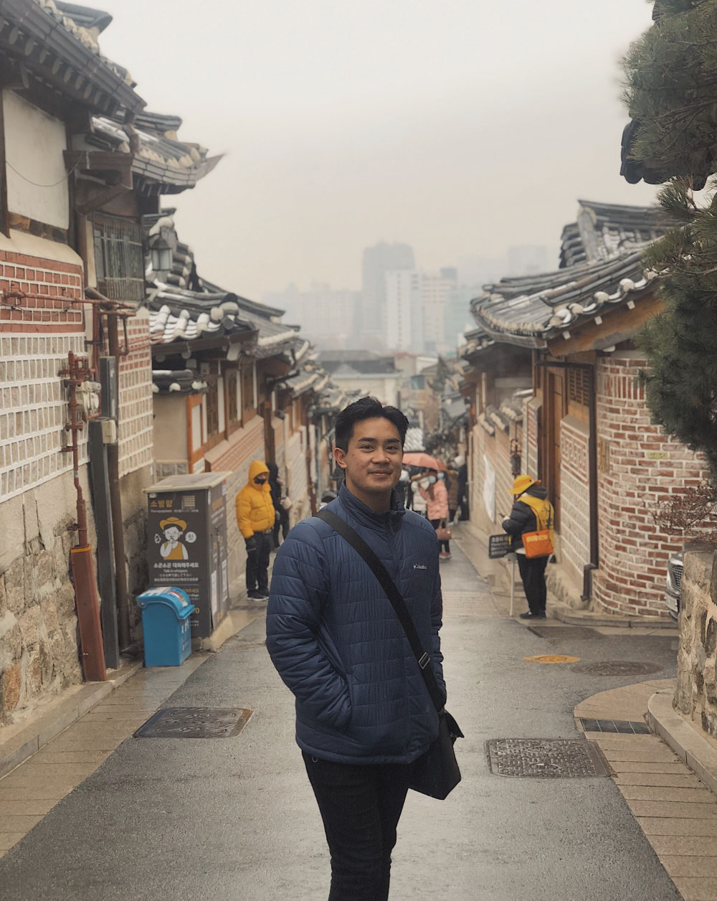

Elijah Benzon, also known as Eli, strives to explore all different media of art. With a strong background in psychology and interests in sociology, mythology, and art history, Elijah attempts to show psychological and sociological themes through art and challenges the viewer's perception on certain ideas and issues. His first stepping stone in pursuing this path was the Element of Water, in which he explores the unique properties of water. In 2020, Elijah begins a new series known as Identity Crisis. In this series, he challenges the idea of identity, referencing personal experiences with others and psychosociological topics.
As a child, Elijah was very involved in art. He has entered artwork into competitions and exhibitions as early as elementary school, winning awards from Association of Christian Schools International (ACSI) competitions. Elijah began incorporating personal experiences into his artwork in high school. His proud accomplishment is winning the Fewster Family Scholarship Award at the 2015 Art Under 20 Show for his drawing Finding Francine, which is found in the Archives gallery.
Elijah's journey as an artist took a sudden turn when he decided to pursue pre-medical studies at the University of Miami. His first few semesters of university, Elijah lost his passion in art. However, his passion resparked after taking a class in sculpture. Being unfamiliar with three-dimensional art, the class was a challenged for Elijah, and it fueled his creativity and passion for art. Most of the art he has made in university is found in the Latest Work gallery.